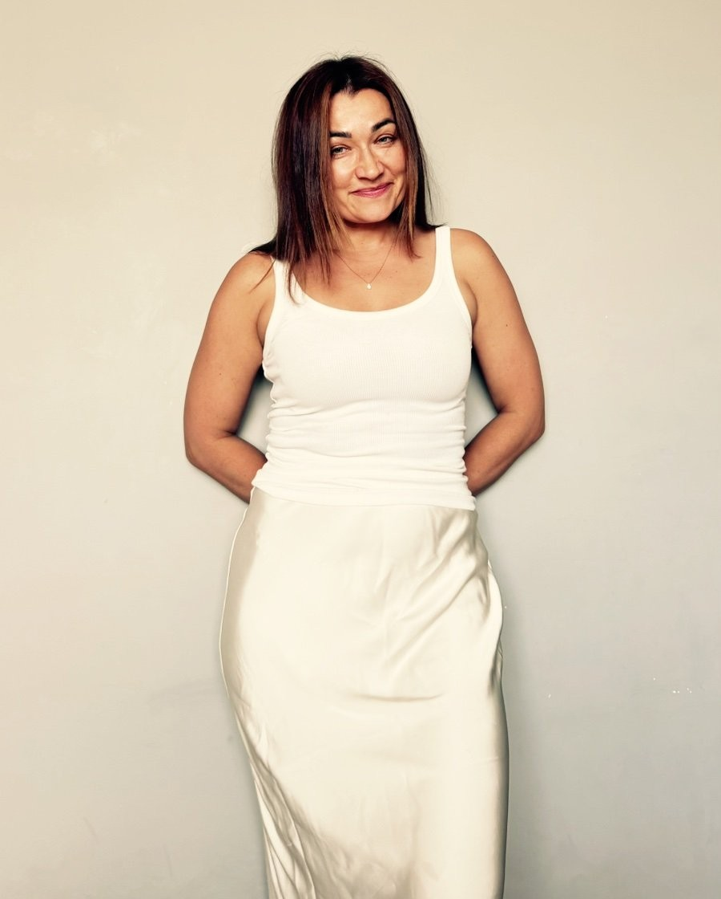
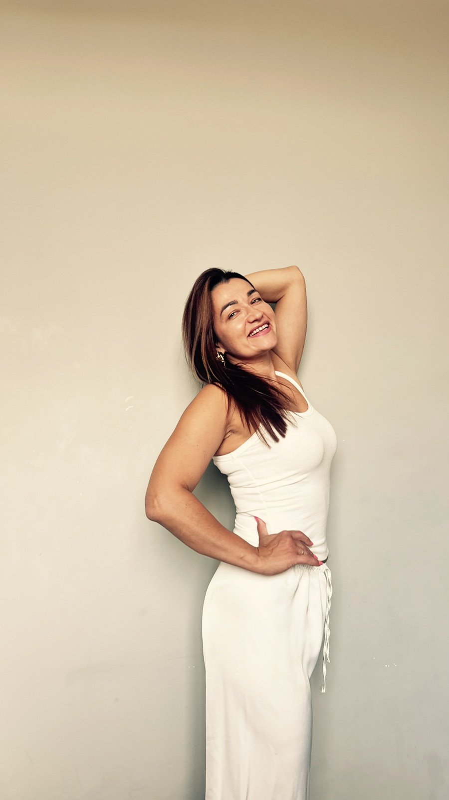
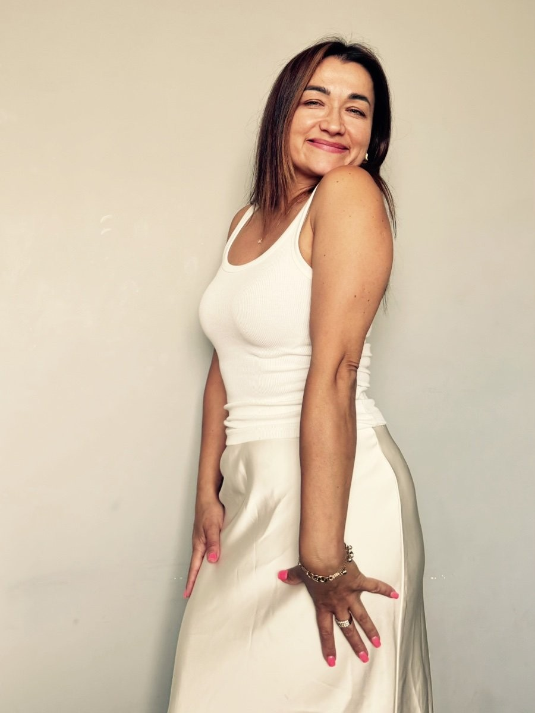
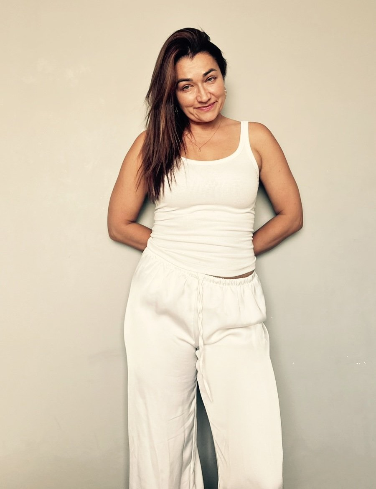
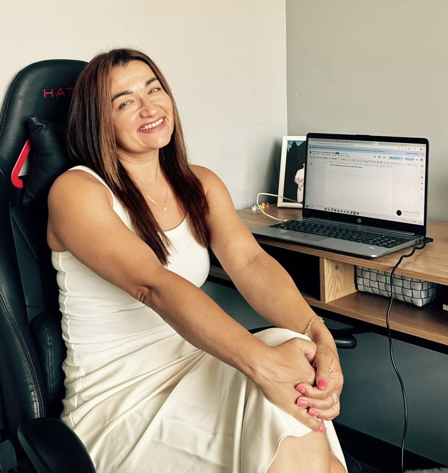

За 21 день ти станеш видимою, впевненою і затребуваною.
Записатися — €100Твій досвід уже є твоєю перевагою. За 21 день ти складеш його в чітку історію, оновиш LinkedIn і резюме та навчишся впевнено говорити про себе — з планом дій на кожен день і з групою, яка йде поруч.
Це не твоя слабкість. Це навичка, яку можна розвинути.
Ти перестанеш надсилати резюме навмання — і почнеш розуміти, де і як тебе знаходять.
Ти зайдеш на співбесіду з готовими відповідями — на питання про вік, паузу, зміну сфери. Без виправдань. Без ніяковості.
LinkedIn перестане бути «тим, що треба б колись зробити» — профіль буде готовий, і він буде працювати на тебе.
Ти зможеш розповісти про себе за 30 секунд — так, щоб людина запам'ятала і захотіла продовжити розмову.
І головне: ти більше не будеш сама зі своїми сумнівами. Поруч — група жінок, які проходять те саме прямо зараз.
Не «навчишся» і не «попрацюєш над». Ось що буде готове й зроблене — у тебе в руках.
Не розсилати резюме навмання, а розуміти, де і як тебе знаходять.
Скрипти відповідей на незручні питання — про вік, паузу в кар'єрі, досвід.
Як знайомитись і розповідати про себе так, щоб це не було схоже на продаж.
Не наодинці зі своїми сумнівами — а серед тих, хто проходить те саме прямо зараз.
Ти шукаєш курс, який можна відкласти "на потім". Тут щодня є завдання — і група, яка це бачить.
Це не твоя слабкість. Це навичка, яку можна розвинути — за 21 день.
Щодня — одне завдання. Один крок. Без теорії, без промов. З групою, яка не дає здатися.
Щодня — завдання в групі. Раз на тиждень — жива зустріч зі мною, 90 хв: ти, я і твої питання, не запис.




Про вік і паузу в кар'єрі
Не треба вигадувати з нуля, як пояснити свій досвід або перерву. Готові фрази — для резюме, LinkedIn і живої розмови. Бери, адаптуй під себе.
Залишаються назавжди
Пропустила зустріч? Захворіла дитина, з'явилась термінова справа? Нічого не втрачаєш — усі три зустрічі назавжди у тебе, повертайся коли потрібно.
Включно з «чому у вашому віці...»
Те саме питання, яке колись почула я сама. Не завчувати напам'ять — а зрозуміти логіку відповіді, щоб звучати впевнено, а не губитись.
Участь у челенджі — €100. Без прихованих платежів.
Старт 1 вересня. Оплата підтверджує вашу участь.
Я не обіцяю офер за 21 день. Рішення роботодавця — не в наших руках. Але те, як ви виглядаєте, звучите і себе подаєте — у ваших. Саме над цим ми і працюємо.
На зв'язку всі 21 день — живі зустрічі, щоденні завдання, зворотний зв'язок. Не зникаю після оплати і не зникаю після фіналу.
У вас назавжди залишається «Карта видимості»: наратив, оновлений LinkedIn, переписане резюме і готові відповіді на незручні питання — незалежно від того, що відбувається на ринку.
Пройшли всі 21 день, але відчуваєте, що щось не рухається? Напишіть — розберемо де затик і що робити далі.

За кар'єру я змінила понад 12 напрямів — від нерухомості до гуманітарних проєктів. Остання зміна відбулась після початку повномасштабної війни: довелось переосмислити все і починати заново в абсолютно нових обставинах. У 41.
Я знаю, що таке прийти на співбесіду з багаторічним досвідом — і почути: «Ваш досвід дуже різноплановий — чому саме зараз і саме це?» Я губилась. Виправдовувалась. Отримувала відмови. І щоразу заново вчилась відповідати впевнено — без вибачень за вік і без применшення свого досвіду.
Я пройшла через момент, коли попередня ідентичність уже не працює, а нова ще не склалась. Через питання «куди далі», коли резюме є — але воно не відчиняє потрібних дверей. Через сумніви, чи не пізно щось змінювати.
Саме тому те, що я роблю зараз, — не теорія.
І ці самі сумніви я чую від клієнток знову і знову:
Зараз я — СЕО великої міжнародної жіночої організації WomaFreesm, яка діє в усіх країнах світу, і директорка освітніх програм у благодійному фонді Hope – children of Ukraine. Регалії — це не головне. Головне: я сама була там, де зараз ви. І знаю конкретні кроки, які виводять далі.
15–30 хвилин на день — це все. Завдання короткі й одразу практичні. Якщо пропустиш день — матеріали нікуди не зникнуть.
Ні. Ми або створимо профіль з нуля, або доопрацюємо той, що вже є. Обидва варіанти підходять.
Так, я в чаті щодня. Відповідаю на питання, коментую завдання. Це жива група з підтримкою, а не автоматичний курс.
Все відбувається онлайн у Telegram. Часовий пояс не має значення — завдання виходять вранці за київським часом, а виконувати можна коли зручно.
Так. Уміння правильно розповідати про себе працює в обох випадках.
Я сама проходила співбесіди, де питали про вік і паузу — і знаю, як це відчувається зсередини. Підготовка змінює те, як ви говорите про себе. Але не змінює людину на іншому боці столу.
Тому я гарантую процес, а не офер. Ви виходите з готовою «Картою видимості» і впевненою відповіддю на будь-яке незручне питання — і це ваше назавжди, незалежно від рішення конкретного роботодавця.
Просто напиши мені — коротко розкажи про свою ситуацію. Я подивлюся на твою ситуацію і чесно скажу, чи підійде цей формат саме тобі.
Просто написати →Залиш ім'я і контакт — напишу тобі особисто з деталями оплати і входу в групу.
Я особисто читаю кожну заявку і відповідаю протягом 24 годин.
Живі зустрічі, «Карта видимості» і група, яка йде поруч — замість чергової поради «просто повір у себе».
Записатися — €100